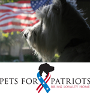
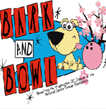
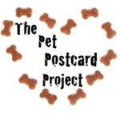
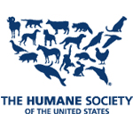
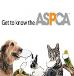

These are among the stories that give life and breath and purpose to the Halo Pet Foundation. To all who participate in this great purpose: thank you for literally giving animals a chance to breathe, and for inspiring all of us to do better!
Below are some of our favorites!
For many more inspiring stories, go to our blog
 |
DELIVERING 400,000 HOLIDAY DINNERS TO SHELTER PETS “KOAST TO KOAST”This holiday season, homeless pets across the nation will have bellies full of nutritious, all natural food, thanks to Halo, Purely for Pets and Freekibble.com. The two organizations are embarking on their first ever Freekibble.com “Koast-to-Koast Kibble Drop,” where shelters and rescues up and down the east and west coasts will receive 400,000 meals of all natural Halo Spot’s Stew for the holidays. |
 |
PETS FOR PATRIOTS BRINGS LAST-CHANCE PETS AND VETERANS TOGETHER THIS VETERANS DAYPets for Patriots, Inc. is a registered 501(c)3 charitable organization dedicated to bringing homeless pets and military families together in a lifelong bond of mutual friendship, loyalty and love. |
 |
HALO JOINS NATIONAL CANINE CANCER FOUNDATION FOR BARK AND BOWL DCOn tour stop number 4, The National Canine Cancer Foundation found itself in the Nations Capital for an inaugural event…no not that! Thee first ever Bark and Bowl DC! |
 |
RESULTS ARE IN FROM THIS SUMMER’S PET POSTCARD PROJECTThe results are in from The Pet Postcard Project summer’s campaign founded by Nikki Moustaki for feeding hungry shelter cats and kittens at both The Cat House on the Kings and Blind Cat Rescue & Sanctuary. The campaign was for the months of June & July and was extended to August 15th. |
HALO AND FREEKIBBLE PART OF GENERATIONON’S MAKE YOUR MARK WEEKWe at Halo Pets, along with Freekibble.com, are proud to be part of generationOn’s Make Your Mark Week, which starts this week. |
 |
LET’S SET A WORLD RECORD FOR ADOPTED PETS TODAY!Halo, Purely for Pets is a proud supporter of Petco’s National Adoption Reunion and will be at the event in Central Park today giving out Free samples and answering any questions about Halo products. |
 |
Humane Society Atlanta Spay & Neuter Event Makes a DifferenceWe received this letter from Amanda Arrington, Associate Director of Humane Communities Program for the Humane Society of the United States, after their event held in Atlanta this past Labor Day weekend. |
 |
Today all Freekibble.com Donations of Halo will Support Hurricane Irene ReliefHere we go again! Today we’ll be donating 100% of the kibble we raise on Freekibble.com and Freekibblekat.com to the animal relief effort in Vermont and North Carolina, in great need of help in the aftermath of Hurricane Irene. |
 |
ASPCA Honored to Recieve Freekibble Donations of Halo Spot's StewA recent ASPCA newsletter shared with readers that they are now one of the lucky recipients of monthly donations of Halo Spot’s Stew from Freekibble.com. |